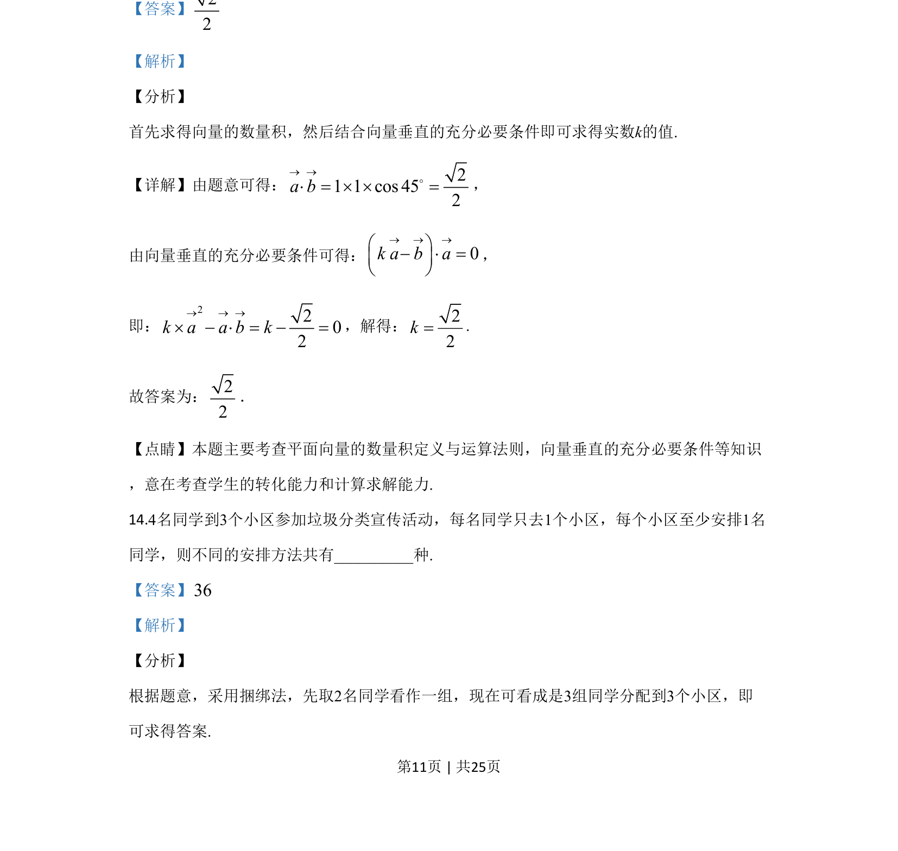

考点：平面向量 平面向量数量积 向量垂直
已知单位向量a、b夹角为45°，ka-b与a垂直，利用数量积条件求k的值。

📄 原 PDF 第 11 页：
素材/真题/吉林/2008-2024·（吉林）数学高考真题/2020年高考数学试卷（理）（新课标Ⅱ）（解析卷）.pdf
13.已知单位向量a，b的夹角为45°，ka–b与a垂直，则k=____.
【答案】22 【解析】 【分析】 首先求得向量的数量积，然后结合向量垂直的充分必要条件即可求得实数k的值. 【详解】由题意可得： 21 1 cos 452a b® ®× = ´ ´ =o， 由向量垂直的充分必要条件可得： 0k a b a® ® ®æ ö- × =ç ÷è ø ， 即： 2202k a a b k® ® ®´ - × = - =，解得：22k=. 故答案为：22 ． 【点睛】本题主要考查平面向量的数量积定义与运算法则，向量垂直的充分必要条件等知识 ，意在考查学生的转化能力和计算求解能力.